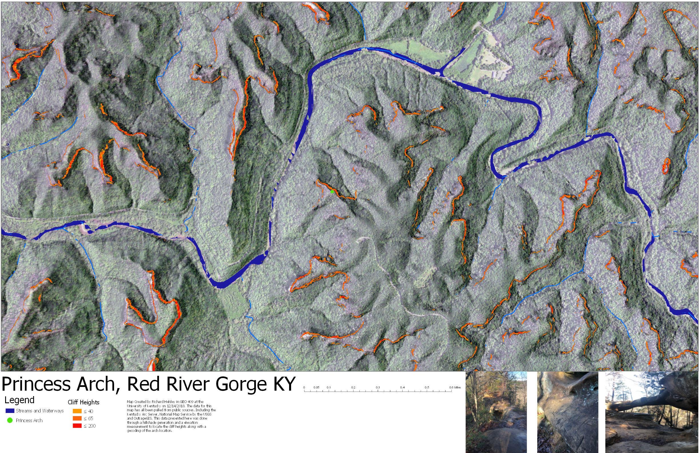
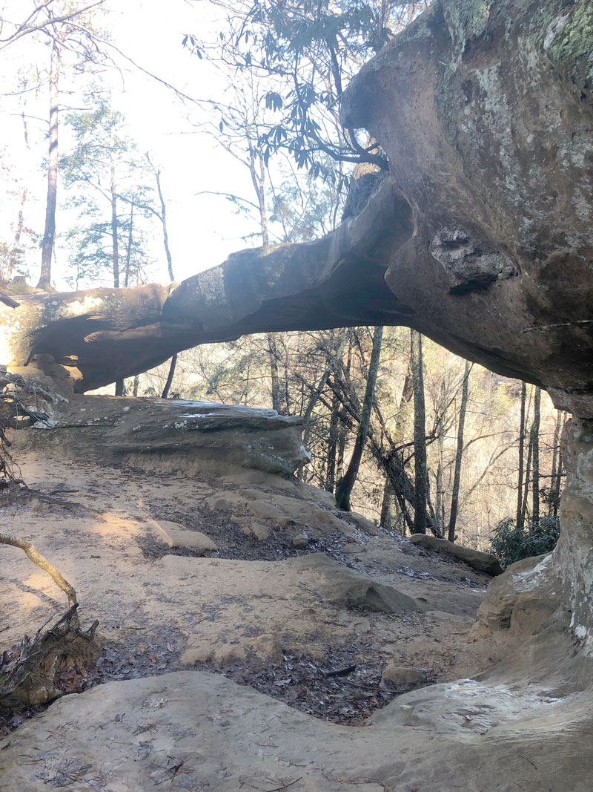
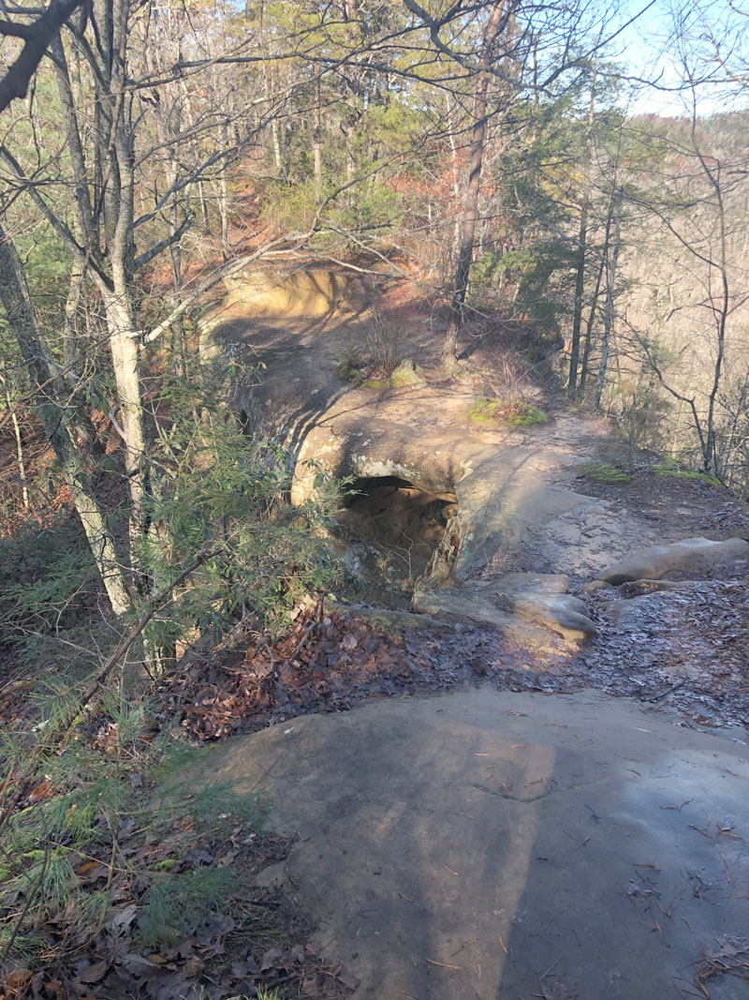
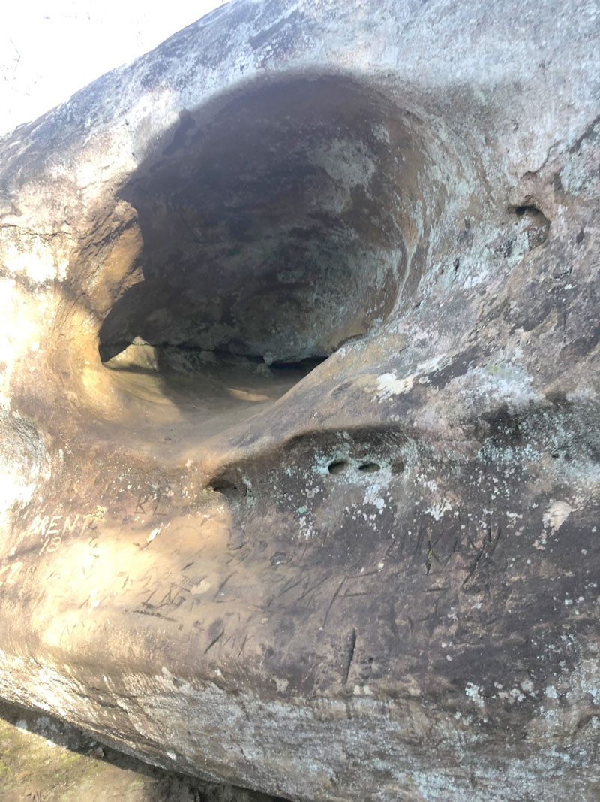
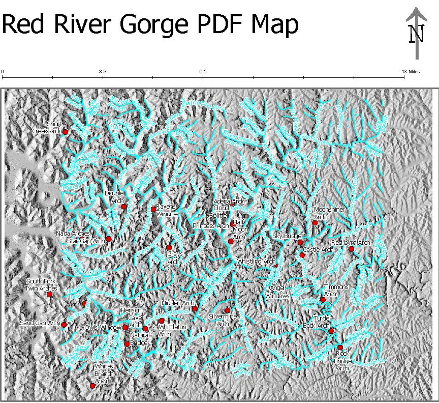

Red River Gorge is a great recreation area that has many different things to offer when it comes to recreation. There is everything from hiking and rock climbing, to bird watching and a yearly cycling event that takes place in the gorge. There are also plent of local amenities as well and outdoor adventures that are put on by various programs. The Arches of the Gorge are also quite famous and well documented. This page is just so that you can learn a littel bit more about Princess Arch. A small arch that stands around 15-20 feet tall and 5 feet wide.
Some notable destinations include, Greys Arch, Chimney Rock, Princess Arch, and many other locations!

Cliff Heights around Princess Arch
Arch from the trail.
Top of the Arch from the trail.
Couples Graffiti.
Unique Erosion of Princess Arch.
PDF Map of Red River Gorge Arches.
This map was made using a combination of Arc Pro and Map Box. Contours and Cliff Heights were created using tools within Arc Pro. These feature classes were then uploaded into Mapbox so that an interactive map could be made that utilized all of the info we had created but be used by the general public. This map is meant for visitors to get a sense of the arches of the gorge. Although Princess Arch was a smaller Arch I believe it to be a more popular one due to the ease of access that it has by the easy hiking trail. With the combination of data using Lidar, etc we were also able to generate a virtual tour of the Arch.
University of Kentucky GEO 409, Fall 2018.
Sources: Lidar point cloud data from the KyFromAbove, 2016 NAIP aerial color photography from USGS EarthExplorer, GNIS Database of places names from the U.S. Board on Geographic Names, and Site visits to arch with handheld camera